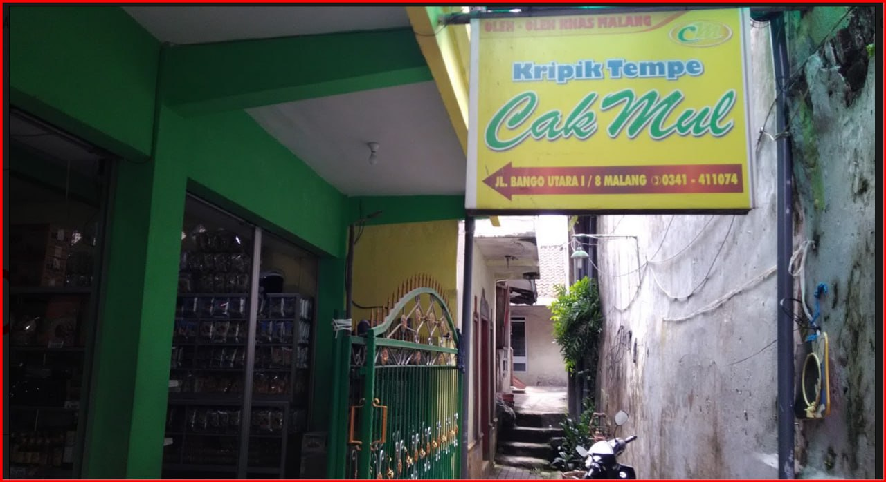

Store Profile & Kisah Kami
Perjalanan rasa, dedikasi, dan renyahnya tradisi turun-temurun sejak dulu.

Awal Mula Tradisi Rasa yang Autentik
Usaha [Keripik Tempe Cak Mul di Malang didirikan oleh Bapak Mulyono pada tahun 1992. Toko pusat dan rumah produksinya berlokasi di Jl. Bango Utara I No. 8, Bunulrejo, Kecamatan Blimbing, Kota Malang. Latar belakang berdirinya usaha legendaris yang telah eksis selama lebih dari 30 tahun ini didorong oleh beberapa faktor utama
Dengan menggunakan kedelai pilihan berkualitas tinggi yang diracik bersama bumbu warisan keluarga. Setiap keripik digoreng dengan tingkat kematangan yang pas untuk menghasilkan kerenyahan maksimal.
Bahan Alami Pilihan
Kami hanya memilih biji kedelai lokal terbaik tanpa pengawet buatan demi menjaga kesehatan dan keaslian rasa.
Renyah & Higienis
Diproses menggunakan standar kebersihan yang ketat dan teknik penggorengan rumahan demi menjaga keautentikan rasa.
Kepuasan Pelanggan
Kebahagiaan penikmat camilan adalah prioritas utama kami dalam menghadirkan kelezatan di setiap kemasan.
Milestone Perjalanan Kami
Tahun 1992
Mulai merintis produksi rumahan dengan skala kecil di lingkungan tetangga.
Tahun 2019
Memperluas berbagai variasi produk sebagai upaya toko oleh oleh setempat.
Hingga Kini
Telah menjadi oleh-oleh favorit pilihan keluarga di malang.